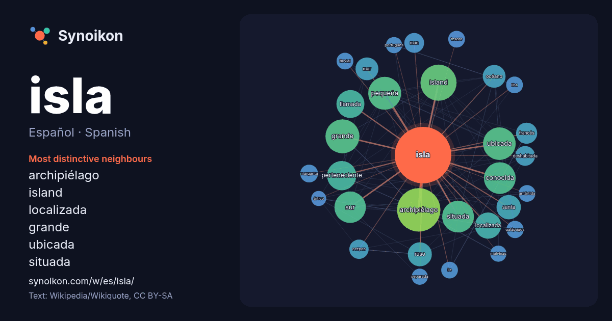

Español · Spanish · word of the day list
isla
“island” · The words found around it in 1514 instances from Spanish Wikipedia, Wikiquote.

Most distinctive neighbours
- archipiélago 90×
- island 63×
- localizada 34×
- grande 33×
- ubicada 31×
- situada 31×
- pequeña 30×
- conocida 27×
- perteneciente 27×
- océano 23×
- ruso 23×
- llamada 22×
- deshabitada 22×
- остров 21×
- man 19×
- galápagos 17×
- margarita 16×
- ilha 16×
- île 16×
- fluvial 15×
× = how many times more often than in general Spanish Wikipedia text.
Most frequent neighbours
- archipiélago 101
- island 70
- grande 62
- pequeña 58
- ubicada 57
- conocida 54
- situada 54
- sur 53
- perteneciente 46
- san 44
- llamada 42
- localizada 37
- forma 35
- santa 32
- ruso 31
- mar 28
- océano 28
- costa 25
- española 24
- francés 24
In context
- Una isla (también ínsula,aunque en desuso) es una porción de tierras naturalmente emergidas completamente rodeadas por agua. Tienen un área menor que Wikipedia snippets · Isla
- La isla de los Estados está ubicada en el océano Atlántico Sur al este de la península Mitre de la isla Grande de Tierra del Fuego, de la cual está separada Wikipedia snippets · Isla de los Estados
- Martín García es una isla fluvial histórica del Río de la Plata, caracterizada por su basamento rocoso, y que pertenece a la República Argentina. Notablemente Wikipedia snippets · Isla Martín García
- La isla de Pascua o Rapa Nui (en idioma rapanui: Rapa Nui, literalmente ‘Rapa Grande’) es una isla chilena perteneciente a la provincia de Isla de Pascua Wikipedia snippets · Isla de Pascua
- Ascensión es una isla de origen volcánico ubicada en el océano Atlántico, a medio camino entre América y África, sobre la placa Sudamericana, al borde Wikipedia snippets · Isla Ascensión
- La isla Puná es una isla del cantón Guayaquil en Ecuador. Forma parte de la provincia de Guayas. Tiene 919 km² de extensión. Está situada en el golfo Wikipedia snippets · Isla Puná
- La Isla de Man (en inglés: Isle of Man o Mann; en manés, Ellan Vannin o Mannin) es una dependencia de la Corona británica autogobernada. Está formada por Wikipedia snippets · Isla de Man
- «tierra nueva», en inglés: Newfoundland, en francés: Terre-Neuve) es una gran isla canadiense ubicada en la costa noreste de Norteamérica, y la parte más poblada Wikipedia snippets · Isla de Terranova
More Spanish words
- agua
- arte
- bosque
- caballo
- camino
- campana
- canción
- ciencia
- ciudad
- clima
- comida
- corazón
- desierto
- dinero
- dios
- espejo
- estrella
- familia
- fuerza
- gato
- historia
- invierno
- jardín
- lengua
- lluvia
- madre
- mapa
- miel
- montaña
- muerte
- naturaleza
- oro
- otoño
- pan
- perro
- puente
- reloj
- sal
- salud
- silencio
- sombra
- tiempo
- tormenta
- trabajo
- tren
- té
- verano
- verdad
- vida
Precomputed on 2026-10-09 with default settings (±5 words, medium corpus). The interactive map can refresh it with live data.